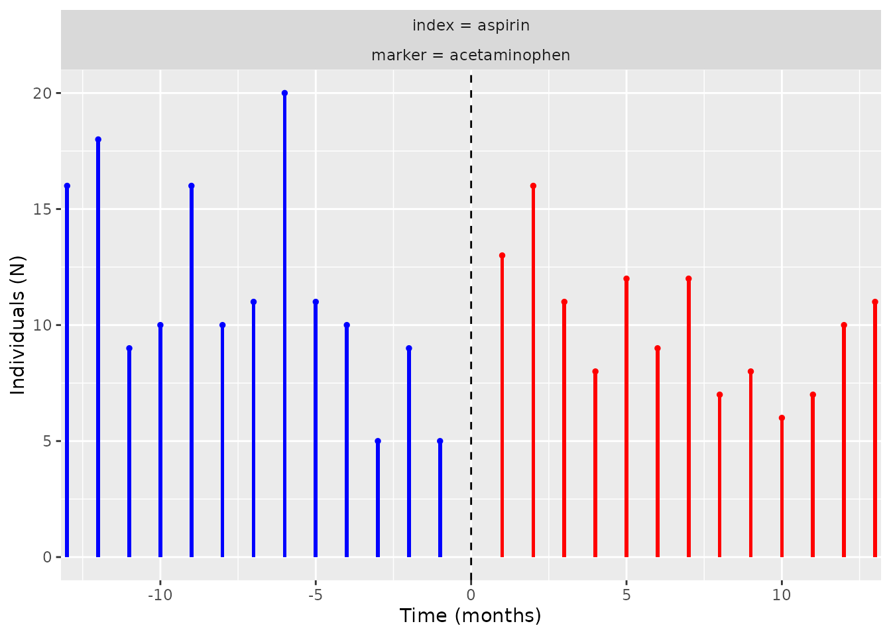
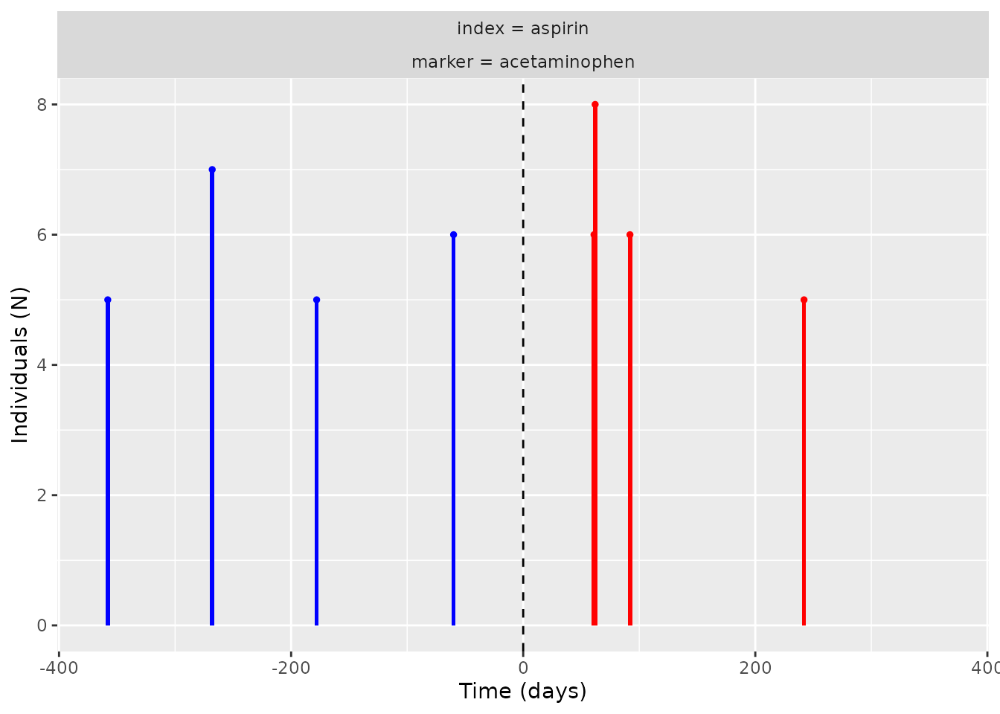
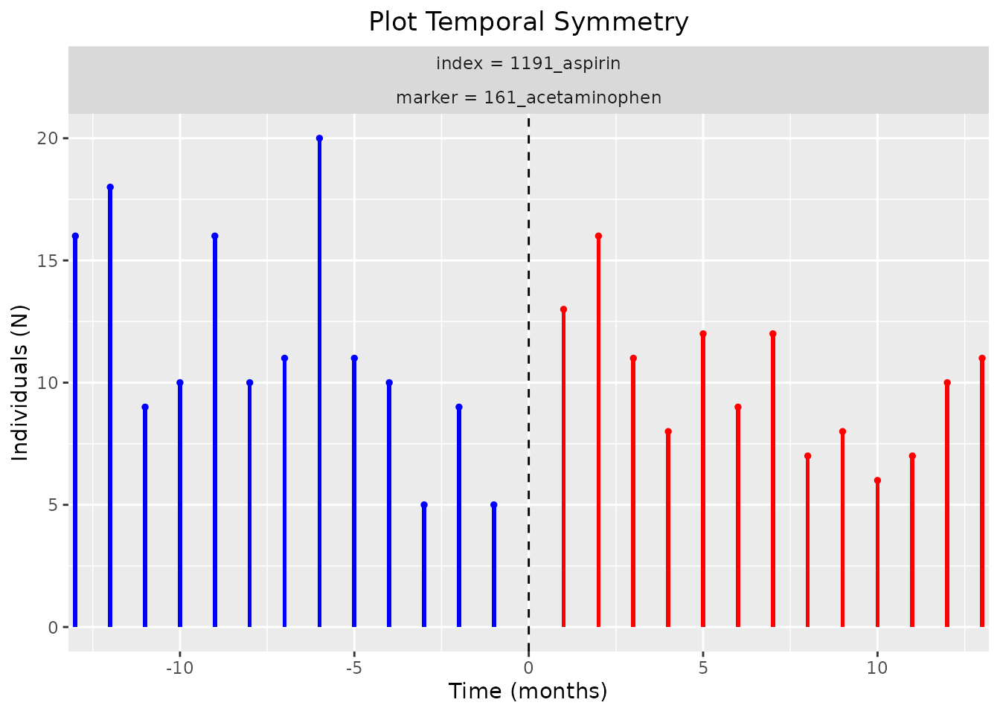
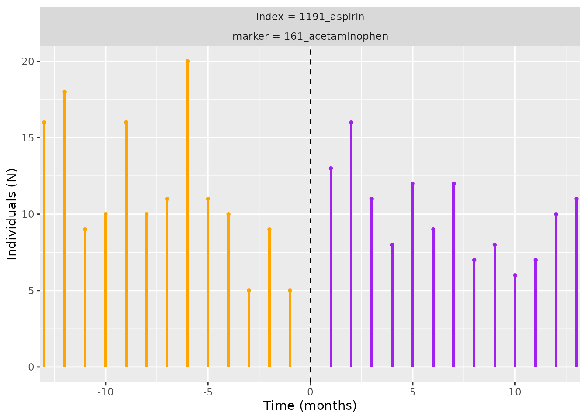

Step 5: Visualise temporal symmetry
Source:vignettes/a06_Visualise_temporal_symmetry.Rmd
a06_Visualise_temporal_symmetry.RmdIntroduction
In this vignette we will explore the functionality and arguments of a set of functions that will help us to understand and visualise the temporal symmetry results (produced Step 4: Obtain aggregated data on temporal symmetry). In particular, we will delve into the following function:
-
plotTemporalSymmetry(): to plot the temporal symmetry.
This function builds-up on previous functions, such as
generateSequenceCohortSet() and
summariseTemporalSymmetry() function.
Let’s regather the output from
summariseTemporalSymmetry()
temporal_symmetry <- summariseTemporalSymmetry(cohort = cdm$intersect)With this established, much like
summariseSequenceRatios(), the object
temporal_symmetry could then be fed into
summariseTemporalSymmetry() to visualise the results:
plotTemporalSymmetry(result = temporal_symmetry)
Note that the
axis is the time, which we recall to be the initiation of the marker
minus the initiation of the index. The unit of the time difference here
is month as this is the default from
summarisTemporalSymmetry().
Modify xlim and labs
If one changes the timescale for
summarisTemporalSymmetry() to be day then
logically one should change the xlim and labs
accordingly like so:
temporal_symmetry_day <- summariseTemporalSymmetry(cohort = cdm$intersect, timescale = "day")
plotTemporalSymmetry(result = temporal_symmetry_day,
labs = c("Time (days)", "Individuals (N)"),
xlim = c(-365, 365))
Modify plotTitle
Much like what we already saw in Step 3. Visualise the sequence ratios. One could do the following:
plotTemporalSymmetry(result = temporal_symmetry,
plotTitle = "Plot Temporal Symmetry")
Modify colours
colours could be modified like so (remember two colours
are required):
plotTemporalSymmetry(result = temporal_symmetry,
colours = c("orange", "purple"))
Modify scales
The scale parameter is designed for the users to have a
choice as to whether to set free y scales for the facet wrap when there
are multiple plots (i.e. each plot has its own scaled y axis) or set
them equal for all. Only accepts “free” for the former and “fixed” for
the latter.
For the cdm$intersect we have, it does not make a
difference setting it to “fixed” or “free” (default). However, should
one wish to set it to “fixed”, one should do:
plotTemporalSymmetry(result = temporal_symmetry,
scales = "fixed")
CDMConnector::cdmDisconnect(cdm = cdm)That would be the end of the vignette, have fun with the package!